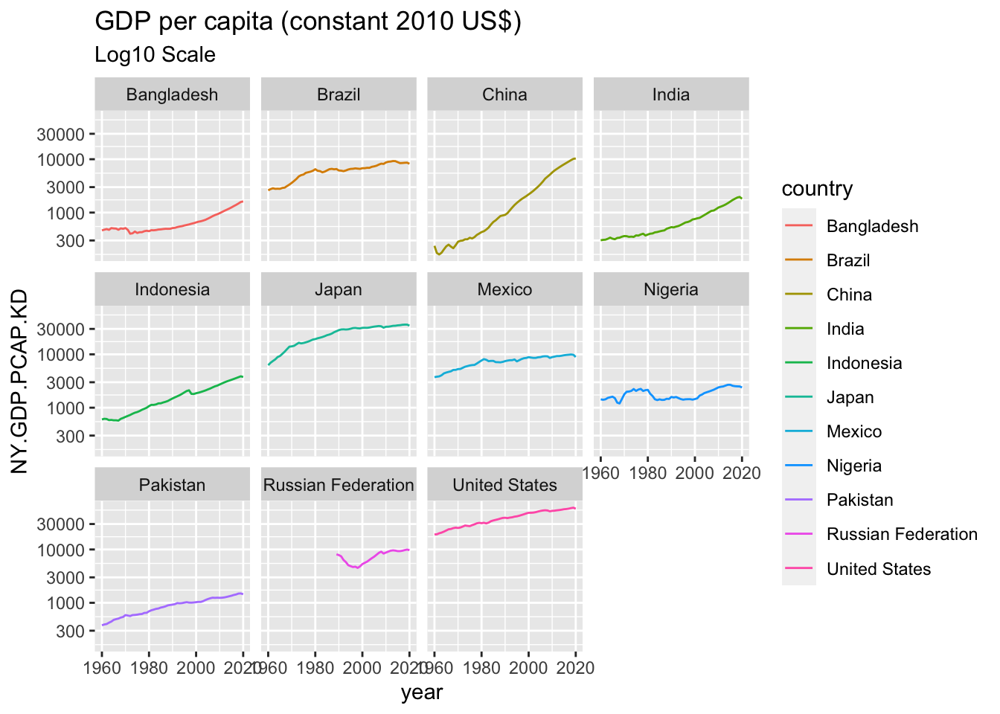
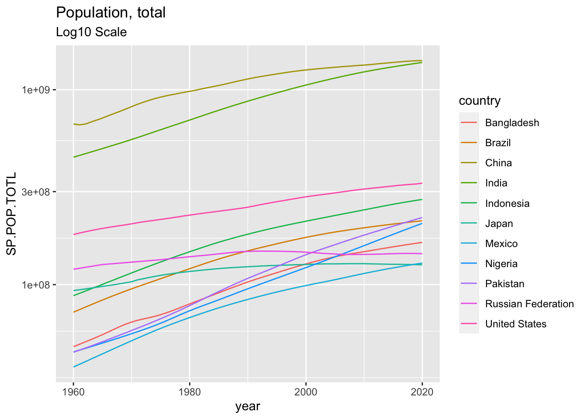

B Appendix B Public Data
B.1 Introduction
B.1.1 Open Data Defined by World Bank
- See the following URL: http://opendatatoolkit.worldbank.org
The term “Open Data” has a very precise meaning. Data or content is open if anyone is free to use, re-use or redistribute it, subject at most to measures that preserve provenance and openness.
- The data must be , which means they must be placed in the public domain or under liberal terms of use with minimal restrictions.
- The data must be , which means they must be published in electronic formats that are machine readable and non-proprietary, so that anyone can access and use the data using common, freely available software tools. Data must also be publicly available and accessible on a public server, without password or firewall restrictions. To make Open Data easier to find, most organizations create and manage Open Data catalogs.
B.1.2 A List of Open Data Catalogue
B.1.2.1 International Institutions
- World Bank: New Ways of Looking at Poverty
- Open Data: https://data.worldbank.org
- World Development Indicators: http://datatopics.worldbank.org/world-development-indicators/
- UN Data: http://data.un.org
- WHO Data: https://www.who.int/gho/en/
- OECD: https://data.oecd.org
- European Union: http://data.europa.eu/euodp/en/home
- African Union: https://au.int/en/ea/statistics
B.1.2.2 Goverments
- United States: https://www.data.gov
- United Kingdom: https://data.gov.uk
- China: http://www.stats.gov.cn/english/
- Japan: https://www.data.go.jp/list-of-database/?lang=en
B.1.2.3 Other Open Public Data
- Google Public Data Explore: https://www.google.com/publicdata/directory?hl=en_US
- Google Dataset Search: https://toolbox.google.com/datasetsearch
- Google Trends: https://trends.google.com/trends/?geo=US
- Open Knowledge Foundation: https://okfn.org
- Global Open Data Index: https://index.okfn.org
- A global, non-profit network that promotes and shares information at no charge, including both content and data. It was founded by Rufus Pollock on 20 May 2004 and launched on 24 May 2004 in Cambridge, UK. It is incorporated in England and Wales as a company limited by guarantee. (Wikipedia)
- Our World in Data: https://ourworldindata.org
- A scientific online publication that focuses on large global problems such as poverty, disease, hunger, climate change, war, existential risks, and inequality. The publication’s founder is the social historian and development economist Max Roser. The research team is based at the University of Oxford. (Wikipedia)
B.1.2.4 Financial Data
B.1.2.4.2 Quantmod
quantmod: Quantitative Financial Modelling & Trading Framework forRRpackage `quantmod: https://cran.r-project.org/web/packages/quantmod/quantmod.pdfquantmodR documentation- Yahoo Finance Data Using
quantmod - Reference: CryptCurrency Bitcoin Analysis Using
quantmod
B.1.3 Examples
B.1.3.1 Florence Nightingale (1820 – 1910)
Florence Nightingale was an English social reformer, statistician and the founder of modern nursing. (wikipedia)
- Diagram of the Causes of Motality in the Army in the East
- Insights in Social History, Books and Research by Hugh Small
- Florence Nightingale’s Statistical Diagrams: https://www.york.ac.uk/depts/maths/histstat/small.htm
- Florence Nightingale Museum
- Book: A contribution to the sanitary history of the British army during the late war with Russia
- Project Gutenberg: Books by Nightingale, Florence
- Nightingale: The Journal of the Data Visualization Society, Medium
{kind=link}
B.1.3.2 Hans Rosling (1948 – 2017)
Hans Rosling was a Swedish physician, academic, and public speaker. He was a professor of international health at Karolinska Institute[4] and was the co-founder and chairman of the Gapminder Foundation, which developed the Trendalyzer software system. (wikipedia)
- Books:
- Factfulness: Ten Reasons We’re Wrong About The World - And Why Things Are Better Than You Think, 2018
- How I Learned to Understand the World: A Memoir, 2020
- Gapminder: https://www.gapminder.org
- You are probably wrong about: Upgrade Your World View
- Bubble Chart: Income vs Life Expectancy over time, 1800 - 2020
- How many variables?
- Videos: The best stats you’ve ever seen, Hans Rosling
- Google Public Data: Example: World Development Indicator
B.1.3.2.1 Factfulness is … From the book
recognizing when a decision feels urgent and remembering that it rarely is.
To control the urgency instinct, take small steps.
- Take a breath. When your urgency instinct is triggered, your other instincts kick in and your analysis shuts down. Ask for more time and more information. It’s rarely now or never and it’s rarely either/or.
- Insist on the data. If something is urgent and important, it should be measured. Beware of data that is relevant but inaccurate, or accurate but irrelevant. Only relevant and accurate data is useful.
- Beware of fortune-tellers. Any prediction about the future is uncertain. Be wary of predictions that fail to acknowledge that. Insist on a full range of scenarios, never just the best or worst case. Ask how often such predictions have been right before.
- Be wary of drastic action. Ask what the side effects will be. Ask how the idea has been tested. Step-by-step practical improvements, and evaluation of their impact, are less dramatic but usually more effective.
B.2 World Bank
B.2.1 About
- World Bank: https://www.worldbank.org
- Who we are:
- To end extreme poverty: By reducing the share of the global population that lives in extreme poverty to 3 percent by 2030.
- To promote shared prosperity: By increasing the incomes of the poorest 40 percent of people in every country.
- World Bank Open Data: https://data.worldbank.org
B.2.2 WDI - World Development Indicaters
- World Development Indicators (WDI): the World Bank’s premier compilation of cross-country comparable data on development.
- Poverty and Inequality
- People
- Environment
- Economy
- States and Markets
- Global Links
B.2.3 R Package WDI
- WDI: World Development Indicators and Other World Bank Data
- Search and download data from over 40 databases hosted by the World Bank, including the World Development Indicators (‘WDI’), International Debt Statistics, Doing Business, Human Capital Index, and Sub-national Poverty indicators.
- Version: 2.7.4
- Materials: README - usage
- NEWS - version history
- Published: 2021-04-06
- Reference manual: WDI.pdf
B.2.3.1 Function WDI: World Development Indicators (World Bank)
- Description: Downloads the requested data by using the World Bank’s API, parses the resulting XML file, and formats it in long country-year format.
- Usage
WDI(
country = "all",
indicator = "NY.GDP.PCAP.KD",
start = 1960,
end = 2020,
extra = FALSE,
cache = NULL,
latest = NULL,
language = "en"
)- Arguments
country:
Vector of countries (ISO-2 character codes, e.g. “BR”, “US”, “CA”) for which the data is needed. Using the string “all” instead of individual iso codes pulls data for every available country.indicator:
Character vector of indicators codes. See the WDIsearch() function. If you supply a named vector, the indicators will be automatically renamed: ‘c(’women_private_sector’ = ‘BI.PWK.PRVS.FE.ZS’)’start: Start date, usually a year in integer format. Must be 1960 or greater.
end:
End date, usually a year in integer format. Must be greater than the ‘start’ argument.extra:
TRUE returns extra variables such as region, iso3c code, and incomeLevelcache:
NULL (optional) a list created by WDIcache() to be used with the extra=TRUE argumentValue: Data frame with country-year observations. You can extract a data.frame with indicator names and descriptive labels by inspecting the
labelattribute of the resulting data.frame:attr(dat, 'label')
B.2.3.2 Function WDIsearch
Search names and descriptions of available WDI series
Description
Data frame with series code, name, description, and source for the WDI series which match the given criteriaUsage
WDIsearch(string = “gdp”, field = “name”, short = TRUE, cache = NULL)Arguments
string:
Character string. Search for this string using grep with ignore.case=TRUE.field:
Character string. Search this field. Admissible fields: ‘indicator’, ‘name’, ‘description’, ‘sourceDatabase’, ‘sourceOrganization’short;
TRUE: Returns only the indicator’s code and name. FALSE: Returns the indicator’s code, name, description, and source.cache;
Data list generated by the WDIcache function. If omitted, WDIsearch will search a local list of series.Value; Data frame with code, name, source, and description of all series which match the criteria.
B.2.4 The First Example
B.2.4.1 Setup
In this R Notebook, we will use the following packages. Istall them before you compile this R Notebook.
tidyversePackage, a collection of packages for data scienceWDIPackage for World Development Indicators
library(tidyverse)
library(WDI)B.2.4.2 GDP Per Capita
The following is taken from the usage.
WDI(
country = "all",
indicator = "NY.GDP.PCAP.KD",
start = 1960,
end = 2020,
extra = FALSE,
cache = NULL,
latest = NULL,
language = "en"
)WDIsearch(string = "NY.GDP.PCAP.KD", field = "indicator", cache = NULL)## indicator name
## 11431 NY.GDP.PCAP.KD GDP per capita (constant 2015 US$)
## 11432 NY.GDP.PCAP.KD.ZG GDP per capita growth (annual %)WDIsearch(string = "NY.GDP.PCAP.KD", field = "indicator", short = FALSE, cache = NULL)## indicator name
## 11431 NY.GDP.PCAP.KD GDP per capita (constant 2015 US$)
## 11432 NY.GDP.PCAP.KD.ZG GDP per capita growth (annual %)
## description
## 11431 GDP per capita is gross domestic product divided by midyear population. GDP is the sum of gross value added by all resident producers in the economy plus any product taxes and minus any subsidies not included in the value of the products. It is calculated without making deductions for depreciation of fabricated assets or for depletion and degradation of natural resources. Data are in constant 2015 U.S. dollars.
## 11432 Annual percentage growth rate of GDP per capita based on constant local currency. GDP per capita is gross domestic product divided by midyear population. GDP at purchaser's prices is the sum of gross value added by all resident producers in the economy plus any product taxes and minus any subsidies not included in the value of the products. It is calculated without making deductions for depreciation of fabricated assets or for depletion and degradation of natural resources.
## sourceDatabase
## 11431 World Development Indicators
## 11432 World Development Indicators
## sourceOrganization
## 11431 World Bank national accounts data, and OECD National Accounts data files.
## 11432 World Bank national accounts data, and OECD National Accounts data files.df <- as_tibble(WDI(
country = c("CN", "IN", "US", "ID","PK", "BR", "NG", "BD", "RU", "MX", "JP"),
indicator = "NY.GDP.PCAP.KD",
start = 1960,
end = 2020,
extra = FALSE,
cache = NULL,
latest = NULL,
language = "en"
))
df## # A tibble: 671 × 5
## country iso2c iso3c year NY.GDP.PCAP.KD
## <chr> <chr> <chr> <int> <dbl>
## 1 Bangladesh BD BGD 2020 1620.
## 2 Bangladesh BD BGD 2019 1582.
## 3 Bangladesh BD BGD 2018 1481.
## 4 Bangladesh BD BGD 2017 1395.
## 5 Bangladesh BD BGD 2016 1323.
## 6 Bangladesh BD BGD 2015 1248.
## 7 Bangladesh BD BGD 2014 1185.
## 8 Bangladesh BD BGD 2013 1130.
## 9 Bangladesh BD BGD 2012 1078.
## 10 Bangladesh BD BGD 2011 1024.
## # … with 661 more rowsggplot(df) +
geom_line(aes(x = year, y = NY.GDP.PCAP.KD, color = country)) +
labs(title = "GDP per capita (constant 2010 US$)")## Warning: Removed 29 rows containing missing values (`geom_line()`).
ggplot(df) +
geom_line(aes(x = year, y = NY.GDP.PCAP.KD, color = country)) +
scale_y_continuous(trans='log10') +
labs(title = "GDP per capita (constant 2010 US$)",
subtitle = "Log10 Scale")## Warning: Removed 29 rows containing missing values (`geom_line()`).
ggplot(df) +
geom_line(aes(x = year, y = NY.GDP.PCAP.KD, color = country)) +
scale_y_continuous(trans='log10') +
facet_wrap(vars(country)) +
labs(title = "GDP per capita (constant 2010 US$)",
subtitle = "Log10 Scale")## Warning: Removed 29 rows containing missing values (`geom_line()`). ### More Examples
B.2.4.4 Population
WDIsearch(string = "Population, Total", field = "name", cache = NULL)## indicator name
## 9659 JI.POP.URBN.ZS Urban population, total (% of total population)
## 17674 SP.POP.TOTL Population, totalWDIsearch(string = "SP.POP.TOTL", field = "indicator", cache = NULL)## indicator name
## 17674 SP.POP.TOTL Population, total
## 17675 SP.POP.TOTL.FE.IN Population, female
## 17676 SP.POP.TOTL.FE.ZS Population, female (% of total population)
## 17677 SP.POP.TOTL.ICP SP.POP.TOTL.ICP:Population
## 17678 SP.POP.TOTL.ICP.ZS SP.POP.TOTL.ICP.ZS:Population shares (World=100)
## 17679 SP.POP.TOTL.MA.IN Population, male
## 17680 SP.POP.TOTL.MA.ZS Population, male (% of total population)
## 17681 SP.POP.TOTL.ZS Population (% of total)B.2.4.5 More Than One Indicator
dfp <- as_tibble(WDI(
country = c("CN", "IN", "US", "ID","PK", "BR", "NG", "BD", "RU", "MX", "JP"),
indicator = c("NY.GDP.PCAP.KD","SP.POP.TOTL"),
start = 1960,
end = 2020,
extra = FALSE,
cache = NULL,
latest = NULL,
language = "en"
))
dfp## # A tibble: 671 × 6
## country iso2c iso3c year NY.GDP.PCAP.KD SP.POP.TOTL
## <chr> <chr> <chr> <int> <dbl> <dbl>
## 1 Bangladesh BD BGD 1960 463. 48013505
## 2 Bangladesh BD BGD 1961 478. 49362834
## 3 Bangladesh BD BGD 1962 490. 50752150
## 4 Bangladesh BD BGD 1963 474. 52202008
## 5 Bangladesh BD BGD 1964 511. 53741721
## 6 Bangladesh BD BGD 1965 504. 55385114
## 7 Bangladesh BD BGD 1966 501. 57157651
## 8 Bangladesh BD BGD 1967 476. 59034250
## 9 Bangladesh BD BGD 1968 505. 60918452
## 10 Bangladesh BD BGD 1969 497. 62679765
## # … with 661 more rowsggplot(dfp) +
geom_line(aes(x = year, y = SP.POP.TOTL, color = country)) +
labs(title = "Population, total")
ggplot(dfp) +
geom_line(aes(x = year, y = SP.POP.TOTL, color = country)) +
scale_y_continuous(trans='log10') +
labs(title = "Population, total",
subtitle = "Log10 Scale")
B.2.4.5.1 All Countries
df_gdp_all <- as_tibble(WDI(
country = "all",
indicator = c("NY.GDP.PCAP.KD","SP.POP.TOTL"),
start = 1960,
end = 2020,
extra = FALSE,
cache = NULL,
latest = NULL,
language = "en"
))
df_gdp_all## # A tibble: 16,226 × 6
## country iso2c iso3c year NY.GDP.PCAP.KD SP.POP.TOTL
## <chr> <chr> <chr> <int> <dbl> <dbl>
## 1 Afghanistan AF AFG 1960 NA 8996967
## 2 Afghanistan AF AFG 1961 NA 9169406
## 3 Afghanistan AF AFG 1962 NA 9351442
## 4 Afghanistan AF AFG 1963 NA 9543200
## 5 Afghanistan AF AFG 1964 NA 9744772
## 6 Afghanistan AF AFG 1965 NA 9956318
## 7 Afghanistan AF AFG 1966 NA 10174840
## 8 Afghanistan AF AFG 1967 NA 10399936
## 9 Afghanistan AF AFG 1968 NA 10637064
## 10 Afghanistan AF AFG 1969 NA 10893772
## # … with 16,216 more rowsdf_gdp_all %>% filter(year == 2020) %>% arrange(desc(SP.POP.TOTL))## # A tibble: 266 × 6
## country iso2c iso3c year NY.GDP.PCAP.KD SP.POP.TOTL
## <chr> <chr> <chr> <int> <dbl> <dbl>
## 1 World 1W "WLD" 2020 10549. 7763932702
## 2 IDA & IBRD total ZT "IBT" 2020 5017. 6571053159
## 3 Low & middle income XO "LMY" 2020 4862. 6494812232
## 4 Middle income XP "MIC" 2020 5341. 5811279241
## 5 IBRD only XF "IBD" 2020 6290. 4862446431
## 6 Early-demographic dividend V2 "EAR" 2020 3374. 3332103561
## 7 Lower middle income XN "" 2020 2297. 3318682068
## 8 Upper middle income XT "" 2020 9395. 2492597173
## 9 East Asia & Pacific Z4 "EAS" 2020 11136. 2361517682
## 10 Late-demographic dividend V3 "LTE" 2020 9711. 2316803603
## # … with 256 more rowsdf_gdp_all %>% filter(year == 2020) %>% arrange(NY.GDP.PCAP.KD)## # A tibble: 266 × 6
## country iso2c iso3c year NY.GDP.PCAP.KD SP.POP.TOTL
## <chr> <chr> <chr> <int> <dbl> <dbl>
## 1 Burundi BI BDI 2020 271. 11890781
## 2 Malawi MW MWI 2020 394. 19129955
## 3 Central African Republic CF CAF 2020 415. 4829764
## 4 Madagascar MG MDG 2020 442. 27691019
## 5 Somalia SO SOM 2020 445. 15893219
## 6 Congo, Dem. Rep. CD COD 2020 505. 89561404
## 7 Niger NE NER 2020 523. 24206636
## 8 Afghanistan AF AFG 2020 530. 38928341
## 9 Mozambique MZ MOZ 2020 575. 31255435
## 10 Liberia LR LBR 2020 616. 5057677
## # … with 256 more rowsdf_gdp_all %>% filter(year == 2020) %>% arrange(desc(NY.GDP.PCAP.KD))## # A tibble: 266 × 6
## country iso2c iso3c year NY.GDP.PCAP.KD SP.POP.TOTL
## <chr> <chr> <chr> <int> <dbl> <dbl>
## 1 Monaco MC MCO 2020 159222. 39244
## 2 Luxembourg LU LUX 2020 104879. 630419
## 3 Bermuda BM BMU 2020 99729. 63893
## 4 Switzerland CH CHE 2020 85685. 8636561
## 5 Ireland IE IRL 2020 78733. 4985674
## 6 Cayman Islands KY CYM 2020 77959. 65720
## 7 Norway NO NOR 2020 75017. 5379475
## 8 Singapore SG SGP 2020 58982. 5685807
## 9 United States US USA 2020 58060. 331501080
## 10 Australia AU AUS 2020 58030. 25693267
## # … with 256 more rowsdf_gdp_all %>% filter(year == 2020) %>% mutate(GDP = NY.GDP.PCAP.KD * SP.POP.TOTL) %>% arrange(desc(GDP))## # A tibble: 266 × 7
## country iso2c iso3c year NY.GDP.PCAP.KD SP.POP.T…¹ GDP
## <chr> <chr> <chr> <int> <dbl> <dbl> <dbl>
## 1 World 1W "WLD" 2020 10549. 7763932702 8.19e13
## 2 High income XD "" 2020 40336. 1240684527 5.00e13
## 3 OECD members OE "OED" 2020 35869. 1372980201 4.92e13
## 4 Post-demographic dividend V4 "PST" 2020 41227. 1117278019 4.61e13
## 5 IDA & IBRD total ZT "IBT" 2020 5017. 6571053159 3.30e13
## 6 Low & middle income XO "LMY" 2020 4862. 6494812232 3.16e13
## 7 Middle income XP "MIC" 2020 5341. 5811279241 3.10e13
## 8 IBRD only XF "IBD" 2020 6290. 4862446431 3.06e13
## 9 East Asia & Pacific Z4 "EAS" 2020 11136. 2361517682 2.63e13
## 10 Upper middle income XT "" 2020 9395. 2492597173 2.34e13
## # … with 256 more rows, and abbreviated variable name ¹SP.POP.TOTLB.2.4.6 Gender
as_tibble(WDIsearch(string = "Gender", field = "name", cache = NULL))## # A tibble: 382 × 2
## indicator name
## <chr> <chr>
## 1 2.3_GIR.GPI "Gender parity index for gross intake ratio in grade 1"
## 2 2.6_PCR.GPI "Gender parity index for primary completion rate "
## 3 5.51.01.07.gender "Gender equality"
## 4 BI.EMP.PWRK.PB.FE.ZS "Public sector employment, as a share of paid employmen…
## 5 BI.EMP.PWRK.PB.MA.ZS "Public sector employment, as a share of paid employmen…
## 6 BI.EMP.TOTL.PB.FE.ZS "Public sector employment, as a share of total employme…
## 7 BI.EMP.TOTL.PB.MA.ZS "Public sector employment, as a share of total employme…
## 8 BI.WAG.PREM.PB.FE "Public sector wage premium, by gender: Female (compare…
## 9 BI.WAG.PREM.PB.FM "P-Value: Public sector wage premium, by gender (compar…
## 10 BI.WAG.PREM.PB.FM.ED "P-Value: Gender wage premium in the public sector, by …
## # … with 372 more rowsas_tibble(WDIsearch(string = "Females", field = "name", cache = NULL))## # A tibble: 69 × 2
## indicator name
## <chr> <chr>
## 1 BI.PWK.PRVS.CK.FE.ZS Females, as a share of private paid employees by occupa…
## 2 BI.PWK.PRVS.EO.FE.ZS Females, as a share of private paid employees by occupa…
## 3 BI.PWK.PRVS.FE.Q1.ZS Females, as a share of private paid employees by wage q…
## 4 BI.PWK.PRVS.FE.Q2.ZS Females, as a share of private paid employees by wage q…
## 5 BI.PWK.PRVS.FE.Q3.ZS Females, as a share of private paid employees by wage q…
## 6 BI.PWK.PRVS.FE.Q4.ZS Females, as a share of private paid employees by wage q…
## 7 BI.PWK.PRVS.FE.Q5.ZS Females, as a share of private paid employees by wage q…
## 8 BI.PWK.PRVS.FE.ZS Females, as a share of private paid employees
## 9 BI.PWK.PRVS.PN.FE.ZS Females, as a share of private paid employees by occupa…
## 10 BI.PWK.PRVS.SN.FE.ZS Females, as a share of private paid employees by occupa…
## # … with 59 more rowsWDIsearch(string = "BI.PWK.PRVS.FE.ZS", field = "indicator", cache = NULL)## indicator name
## 1636 BI.PWK.PRVS.FE.ZS Females, as a share of private paid employeesWDIsearch(string = "BI.PWK.PUBS.FE.ZS", field = "indicator", cache = NULL)## indicator name
## 1659 BI.PWK.PUBS.FE.ZS Females, as a share of public paid employees# Rename indicators on the fly
dfwe <- as_tibble(WDI(country = c("CN", "IN", "US", "ID","PK", "BR", "NG", "BD", "RU", "MX", "JP"),
indicator = c('women_private_sector' = 'BI.PWK.PRVS.FE.ZS',
'women_public_sector' = 'BI.PWK.PUBS.FE.ZS')))
dfwe## # A tibble: 231 × 6
## country iso2c iso3c year women_private_sector women_public_sector
## <chr> <chr> <chr> <int> <dbl> <dbl>
## 1 Bangladesh BD BGD 2000 NA NA
## 2 Bangladesh BD BGD 2001 NA NA
## 3 Bangladesh BD BGD 2002 NA NA
## 4 Bangladesh BD BGD 2003 0.193 0.231
## 5 Bangladesh BD BGD 2004 NA NA
## 6 Bangladesh BD BGD 2005 NA NA
## 7 Bangladesh BD BGD 2006 NA NA
## 8 Bangladesh BD BGD 2007 NA NA
## 9 Bangladesh BD BGD 2008 NA NA
## 10 Bangladesh BD BGD 2009 NA NA
## # … with 221 more rowssummary(dfwe, country)## country iso2c iso3c year
## Length:231 Length:231 Length:231 Min. :2000
## Class :character Class :character Class :character 1st Qu.:2005
## Mode :character Mode :character Mode :character Median :2010
## Mean :2010
## 3rd Qu.:2015
## Max. :2020
##
## women_private_sector women_public_sector
## Min. :0.08965 Min. :0.1285
## 1st Qu.:0.30555 1st Qu.:0.4159
## Median :0.40629 Median :0.5508
## Mean :0.35629 Mean :0.4679
## 3rd Qu.:0.46033 3rd Qu.:0.5760
## Max. :0.58404 Max. :0.6583
## NA's :153 NA's :152dfwe %>% group_by(country) %>% select(2,4,5,6) %>%
summarize(private_n = sum(is.na(women_private_sector)),
private = mean(is.na(women_private_sector)),
public_n = sum(is.na(women_public_sector)),
public = mean(is.na(women_public_sector)))## Adding missing grouping variables: `country`## # A tibble: 11 × 5
## country private_n private public_n public
## <chr> <int> <dbl> <int> <dbl>
## 1 Bangladesh 17 0.810 17 0.810
## 2 Brazil 6 0.286 6 0.286
## 3 China 19 0.905 19 0.905
## 4 India 17 0.810 17 0.810
## 5 Indonesia 20 0.952 20 0.952
## 6 Japan 21 1 21 1
## 7 Mexico 5 0.238 5 0.238
## 8 Nigeria 19 0.905 18 0.857
## 9 Pakistan 13 0.619 13 0.619
## 10 Russia 4 0.190 4 0.190
## 11 United States 12 0.571 12 0.571B.2.5 World Bank Country and Lending Groups and an Option extra = TRUE
B.2.5.1 Review Basics: World Development Indicators: ?WDI
- Basic Usage
WDI(country = "all", indicator = "NY.GDP.PCAP.KD")- Vector Notation
WDI(country = c("US", "CN", JP"), # ISO-2 codes
indicator = c("gdp_pcap" = "NY.GDP.PCAP.KD",
"life_exp" = "SP.DYN.LE00.IN"))- Use Extra
WDI(country = "all",
indicator = c("gdp_pcap" = NY.GDP.PCAP.KD",
"life_exp" = "SP.DYN.LE00.IN"), extra = TRUE)extra: TRUE returns extra variables such as region, iso3c code, and incomeLevel
B.2.5.2 World Bank Country and Lending Groups
B.2.5.2.1 About CLASS.xls
This table classifies all World Bank member countries (189), and all other economies with populations of more than 30,000. For operational and analytical purposes, economies are divided among income groups according to 2019 gross national income (GNI) per capita, calculated using the World Bank Atlas method. The groups are:
- low income, $1,035 or less;
- lower middle income, $1,036 - 4,045;
- upper middle income, $4,046 - 12,535;
- and high income, $12,536 or more.
The effective operational cutoff for IDA eligibility is $1,185 or less.
B.2.5.2.2 Geographic classifications
- IBRD: International Bank for Reconstruction and Development
- IDA: International Development Association
IDA countries are those that lack the financial ability to borrow from IBRD.
IDA credits are deeply concessional—interest-free loans and grants for programs aimed at boosting economic growth and improving living conditions.
IBRD loans are noncessional.
Blend countries are eligible for IDA credits because of their low per capita incomes but are also eligible for IBRD because they are financially creditworthy.
B.2.5.2.3 Note
The term country, used interchangeably with economy, does not imply political independence but refers to any territory for which authorities report separate social or economic statistics.
Income classifications set on 1 July 2020 remain in effect until 1 July 2021.
Argentina, which was temporarily unclassified in July 2016 pending release of revised national accounts statistics, was classified as upper middle income for FY17 as of 29 September 2016 based on alternative conversion factors. Also effective 29 September 2016, Syrian Arab Republic is reclassified from IBRD lending category to IDA-only.
On 29 March 2017, new country codes were introduced to align World Bank 3-letter codes with ISO 3-letter codes: Andorra (AND), Dem. Rep. Congo (COD), Isle of Man (IMN), Kosovo (XKX), Romania (ROU), Timor-Leste (TLS), and West Bank and Gaza (PSE).
B.2.5.3 Importing Excel Files
- CLASS.xlsx: - copy the following link
- readxl: https://readxl.tidyverse.org
- Help:
read_excel,read_xls,read_xlsx
url_class <- "https://databankfiles.worldbank.org/data/download/site-content/CLASS.xlsx"
download.file(url = url_class, destfile = "data/CLASS.xlsx")B.2.5.3.1 Countries
Let us look at the first sheet.
- The column names are in the 5th row.
- The country data starts from the 7th row.
- Zimbabue is at the last row.
library(readxl)
wb_countries_tmp <- read_excel("data/CLASS.xlsx", sheet = 1, skip = 0, n_max =219)
wb_countries <- wb_countries_tmp %>%
select(country = Economy, iso3c = Code, region = Region, income = `Income group`, lending = "Lending category", other = "Other (EMU or HIPC)")
wb_countries## # A tibble: 218 × 6
## country iso3c region income lending other
## <chr> <chr> <chr> <chr> <chr> <chr>
## 1 Aruba ABW Latin America & Caribbean High inc… <NA> <NA>
## 2 Afghanistan AFG South Asia Low inco… IDA HIPC
## 3 Angola AGO Sub-Saharan Africa Lower mi… IBRD <NA>
## 4 Albania ALB Europe & Central Asia Upper mi… IBRD <NA>
## 5 Andorra AND Europe & Central Asia High inc… <NA> <NA>
## 6 United Arab Emirates ARE Middle East & North Africa High inc… <NA> <NA>
## 7 Argentina ARG Latin America & Caribbean Upper mi… IBRD <NA>
## 8 Armenia ARM Europe & Central Asia Upper mi… IBRD <NA>
## 9 American Samoa ASM East Asia & Pacific Upper mi… <NA> <NA>
## 10 Antigua and Barbuda ATG Latin America & Caribbean High inc… IBRD <NA>
## # … with 208 more rowsB.2.5.3.2 Regions
- readxl: https://readxl.tidyverse.org
- Help:
read_excel,read_xls,read_xlsx
- Regions start from the 227th row.
- Regions end at the 272th row.
wb_regions_tmp <- read_excel("data/CLASS.xlsx", sheet = 1, skip = 0, n_max =266) %>%
slice(-(1:220))
wb_regions <- wb_regions_tmp %>%
select(region = Economy, iso3c = Code) %>% drop_na()
wb_regions## # A tibble: 45 × 2
## region iso3c
## <chr> <chr>
## 1 Caribbean small states CSS
## 2 Central Europe and the Baltics CEB
## 3 Early-demographic dividend EAR
## 4 East Asia & Pacific EAS
## 5 East Asia & Pacific (excluding high income) EAP
## 6 East Asia & Pacific (IDA & IBRD) TEA
## 7 Euro area EMU
## 8 Europe & Central Asia ECS
## 9 Europe & Central Asia (excluding high income) ECA
## 10 Europe & Central Asia (IDA & IBRD) TEC
## # … with 35 more rowsLet us look at the second sheet.
wb_groups_tmp <- read_excel("data/CLASS.xlsx", sheet = "Groups") # sheet = 3
wb_groups <- wb_groups_tmp %>%
select(gcode = GroupCode, group = GroupName, iso3c = CountryCode, country = CountryName)B.2.5.4 Filtering Join
Description
Filtering joins filter rows from x based on the presence or absence of matches in y:
- semi_join() return all rows from x with a match in y.
- anti_join() return all rows from x without a match in y.
gdp_pcap <- WDI(country = "all", indicator = "NY.GDP.PCAP.KD")
head(gdp_pcap)## country iso2c iso3c year NY.GDP.PCAP.KD
## 1 Africa Eastern and Southern ZH AFE 2021 1477.249
## 2 Africa Eastern and Southern ZH AFE 2020 1452.730
## 3 Africa Eastern and Southern ZH AFE 2019 1534.890
## 4 Africa Eastern and Southern ZH AFE 2018 1544.078
## 5 Africa Eastern and Southern ZH AFE 2017 1546.796
## 6 Africa Eastern and Southern ZH AFE 2016 1548.813gdp_pcap_extra <- WDI(country = "all", indicator = "NY.GDP.PCAP.KD", extra = TRUE)
head(gdp_pcap_extra)## country iso2c iso3c year NY.GDP.PCAP.KD status lastupdated region
## 1 Afghanistan AF AFG 2015 556.0072 2022-09-16 South Asia
## 2 Afghanistan AF AFG 2011 511.9985 2022-09-16 South Asia
## 3 Afghanistan AF AFG 2014 565.1793 2022-09-16 South Asia
## 4 Afghanistan AF AFG 2013 568.9645 2022-09-16 South Asia
## 5 Afghanistan AF AFG 2012 557.9497 2022-09-16 South Asia
## 6 Afghanistan AF AFG 2007 392.7105 2022-09-16 South Asia
## capital longitude latitude income lending
## 1 Kabul 69.1761 34.5228 Low income IDA
## 2 Kabul 69.1761 34.5228 Low income IDA
## 3 Kabul 69.1761 34.5228 Low income IDA
## 4 Kabul 69.1761 34.5228 Low income IDA
## 5 Kabul 69.1761 34.5228 Low income IDA
## 6 Kabul 69.1761 34.5228 Low income IDACompare the following:
- 16,226 rows = 13,054 rows (country) + 3172 rows (not country)
gdp_pcap_country <- gdp_pcap %>% semi_join(wb_countries, by = "country")
head(gdp_pcap_country)## country iso2c iso3c year NY.GDP.PCAP.KD
## 1 Afghanistan AF AFG 2021 NA
## 2 Afghanistan AF AFG 2020 529.7412
## 3 Afghanistan AF AFG 2019 555.1390
## 4 Afghanistan AF AFG 2018 546.7430
## 5 Afghanistan AF AFG 2017 553.3551
## 6 Afghanistan AF AFG 2016 552.9969gdp_pcap_extra %>% filter(region != "Aggregates") %>% slice(10)## country iso2c iso3c year NY.GDP.PCAP.KD status lastupdated region
## 1 Afghanistan AF AFG 2003 332.22 2022-09-16 South Asia
## capital longitude latitude income lending
## 1 Kabul 69.1761 34.5228 Low income IDAWhat is the difference?
- 13,176 rows is not equal to 13,054 rows + 183 rows
gdp_pcap_extra %>% filter(region != "Aggregates") %>% anti_join(gdp_pcap_country) %>% slice(10)## Joining, by = c("country", "iso2c", "iso3c", "year", "NY.GDP.PCAP.KD")## country iso2c iso3c year NY.GDP.PCAP.KD status lastupdated
## 1 Cote d'Ivoire CI CIV 2003 1566.577 2022-09-16
## region capital longitude latitude income
## 1 Sub-Saharan Africa Yamoussoukro -4.0305 5.332 Lower middle income
## lending
## 1 IDAgdp_pcap %>% anti_join(wb_countries) %>% slice(10)## Joining, by = c("country", "iso3c")## country iso2c iso3c year NY.GDP.PCAP.KD
## 1 Africa Eastern and Southern ZH AFE 2012 1513.37Note: World Bank provides the WDI_csv for more information.
- WDICountry-Series.csv - 965,9KB
- WDICountry.csv - 125.8KB
- WDIData.csv - 193 MB
- WDIFootNote.csv - 61.1MB
- WDISeries-Time.csv - 46.1KB
- WDISeries.csv” - 3.5MB
B.2.5.5 Join Tables
There are three types of joining tables. Commands are from tidyverse packages though there is a way to do the same by Base R with appropriate arguments.
- Bind rows: bind_rows(), intersect(), setdiff(), union()
- Bind columns: bind_cols(), left_join(), right_join(), inner_join(), full_join()
- Filtering join: semi_join(), anti_join()
B.2.5.6 Join Tables: Quick References
Cheatsheet: Data Transformation, pages 2 and 3. You can download it from RStudio > Help.
Tidyverse Homepage:
- Efficiently bind multiple data frames by row and column: bind_rows(), bind_cols()
- Set operations: intersect(), setdiff(), union()
- Mutating joins: left_join(), right_join(), inner_join(), full_join()
- Filtering joins: semi_join(), anti_join()
R Studio Primers: Tidy Your Data – r4ds: Wrangle, II
- Reshape Data, Separate and Unite Columns, Join Data Sets
B.3 United Nations
` * UN Data: https://data.un.org - Datamarts: http://data.un.org/Explorer.aspx
B.3.1 Importing Data
- Get the URL (uniform resource locator) - copy the link
url_of_data <- "https://data.un.org/--long url--.csv"
- Download the file into the
destfilein data folder:
download.file(url = url_of_data, destfile = "data/un_pop.csv")
- Read the file:
df_un_pop <- read_csv("data/un_pop.csv")
Alternative, skip 2 and read the file using the URL.
* read_csv(url)
B.3.2 Example
B.3.2.1 Population
The followind do not look line the pdf above.
df_un_pop <- read_csv("https://data.un.org/_Docs/SYB/CSV/SYB64_1_202110_Population,%20Surface%20Area%20and%20Density.csv", skip = 1)## New names:
## Rows: 7260 Columns: 7
## ── Column specification
## ────────────────────────────────────────────────────────
## Delimiter: "," chr (4): ...2, Series, Footnotes, Source dbl (2):
## Region/Country/Area, Year num (1): Value
## ℹ Use `spec()` to retrieve the full column specification for this data. ℹ
## Specify the column types or set `show_col_types = FALSE` to quiet this message.
## • `` -> `...2`head(df_un_pop)## # A tibble: 6 × 7
## `Region/Country/Area` ...2 Year Series Value Footn…¹ Source
## <dbl> <chr> <dbl> <chr> <dbl> <chr> <chr>
## 1 1 Total, all countries … 2010 Popul… 6957. <NA> Unite…
## 2 1 Total, all countries … 2010 Popul… 3508. <NA> Unite…
## 3 1 Total, all countries … 2010 Popul… 3449. <NA> Unite…
## 4 1 Total, all countries … 2010 Sex r… 102. <NA> Unite…
## 5 1 Total, all countries … 2010 Popul… 27 <NA> Unite…
## 6 1 Total, all countries … 2010 Popul… 11 <NA> Unite…
## # … with abbreviated variable name ¹Footnotescolnames(df_un_pop)## [1] "Region/Country/Area" "...2" "Year"
## [4] "Series" "Value" "Footnotes"
## [7] "Source"un_pop_tbl <- df_un_pop %>% select(num = "Region/Country/Area", region = "...2", year = "Year", series = "Series", value = "Value") %>%
pivot_wider(names_from = series, values_from = value)
head(un_pop_tbl)## # A tibble: 6 × 11
## num region year Popul…¹ Popul…² Popul…³ Sex r…⁴ Popul…⁵ Popul…⁶ Popul…⁷
## <dbl> <chr> <dbl> <dbl> <dbl> <dbl> <dbl> <dbl> <dbl> <dbl>
## 1 1 Total, al… 2010 6957. 3508. 3449. 102. 27 11 53.5
## 2 1 Total, al… 2015 7380. 3721. 3659. 102. 26.2 12.2 56.7
## 3 1 Total, al… 2019 7713. 3889. 3824. 102. 25.6 13.2 59.3
## 4 1 Total, al… 2021 7875. 3970. 3905. 102. 25.3 13.7 60.5
## 5 2 Africa 2010 1039. 518. 521. 99.5 41.5 5.1 35.1
## 6 2 Africa 2015 1182. 590. 592. 99.7 41.1 5.3 39.9
## # … with 1 more variable: `Surface area (thousand km2)` <dbl>, and abbreviated
## # variable names ¹`Population mid-year estimates (millions)`,
## # ²`Population mid-year estimates for males (millions)`,
## # ³`Population mid-year estimates for females (millions)`,
## # ⁴`Sex ratio (males per 100 females)`,
## # ⁵`Population aged 0 to 14 years old (percentage)`,
## # ⁶`Population aged 60+ years old (percentage)`, ⁷`Population density`colnames(un_pop_tbl) <- c("num", "region", "year", "total", "male", "female", "ratio", "0-14", "60+", "density", "area")
head(un_pop_tbl)## # A tibble: 6 × 11
## num region year total male female ratio `0-14` `60+` density area
## <dbl> <chr> <dbl> <dbl> <dbl> <dbl> <dbl> <dbl> <dbl> <dbl> <dbl>
## 1 1 Total, all c… 2010 6957. 3508. 3449. 102. 27 11 53.5 NA
## 2 1 Total, all c… 2015 7380. 3721. 3659. 102. 26.2 12.2 56.7 136162
## 3 1 Total, all c… 2019 7713. 3889. 3824. 102. 25.6 13.2 59.3 130094
## 4 1 Total, all c… 2021 7875. 3970. 3905. 102. 25.3 13.7 60.5 NA
## 5 2 Africa 2010 1039. 518. 521. 99.5 41.5 5.1 35.1 NA
## 6 2 Africa 2015 1182. 590. 592. 99.7 41.1 5.3 39.9 30311